Visual Design Archive
Clear message.
Quiet impact.
작은 화면 안에서도 핵심이 먼저 보이도록.
목적과 메시지에 맞춰 구성한 비주얼 디자인 작업입니다.
Banner
제품과 프로모션의 핵심이 짧은 순간에도 명확하게 전달되도록 구성했습니다.

시원한 블루 배경과 세럼 패키지를 크게 배치하고, 트러블 고민을 담은 헤드라인과 선명한 CTA로 제품의 핵심 메시지를 전달했습니다.
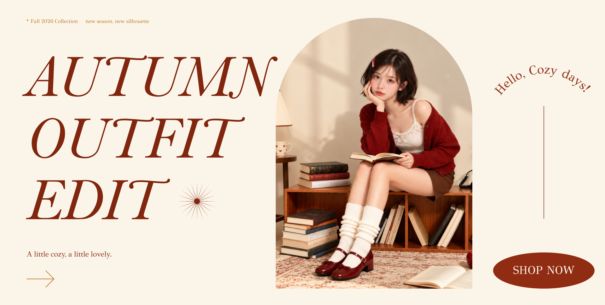
크림 톤 배경과 버건디 타이포그래피, 아치형 스타일링 이미지로 포근한 가을 컬렉션의 분위기를 전달했습니다.
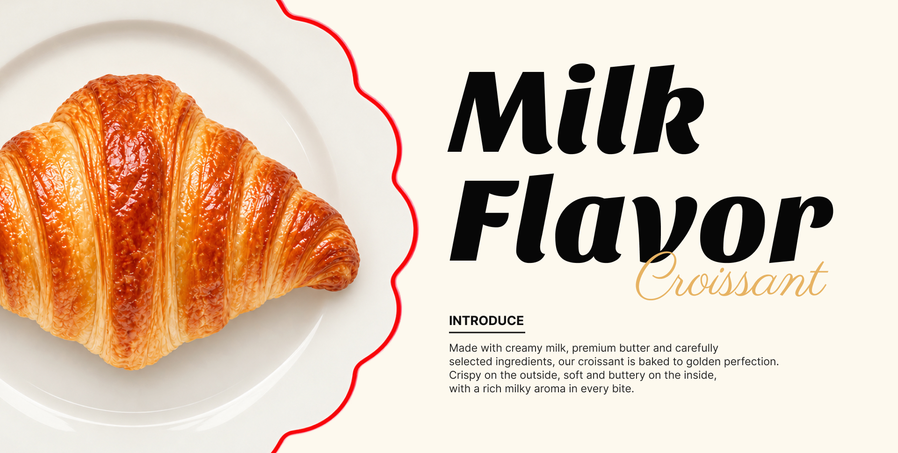
크루아상의 질감이 돋보이는 클로즈업과 크림 톤 배경, 레드 곡선으로 고소하고 부드러운 풍미를 표현했습니다.

핑크 톤의 앰플 비주얼과 'Healthy Glow' 메시지를 중심으로 제품의 촉촉한 보습감을 강조한 스킨케어 배너입니다.
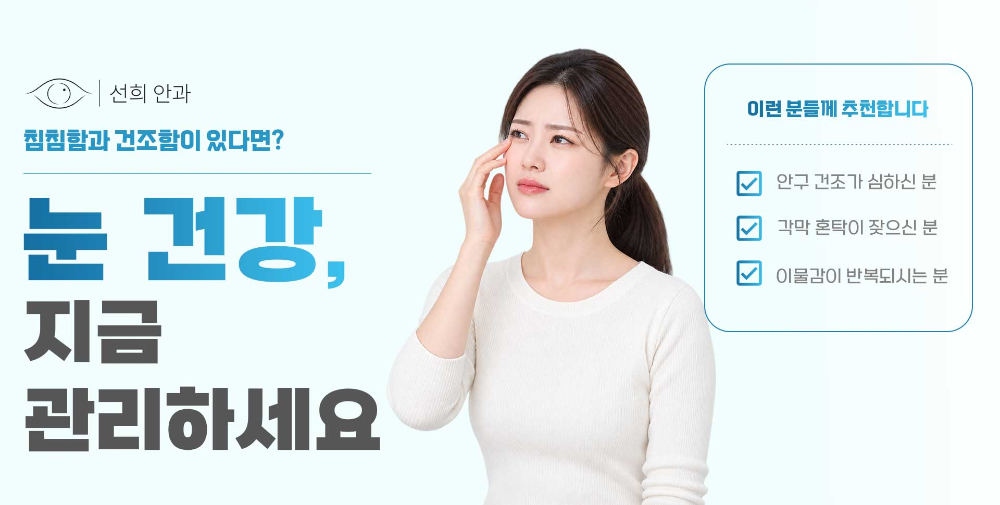
증상 중심의 헤드라인과 체크리스트를 배치해 진료 필요성을 빠르게 인지하고 상담으로 이어지도록 구성했습니다.
Pop-up
혜택과 행동 유도 문구를 빠르게 읽을 수 있도록 정보의 크기와 순서를 설계했습니다.
Poster
제품의 형태와 분위기를 중심으로 타이포그래피와 여백의 균형을 맞췄습니다.
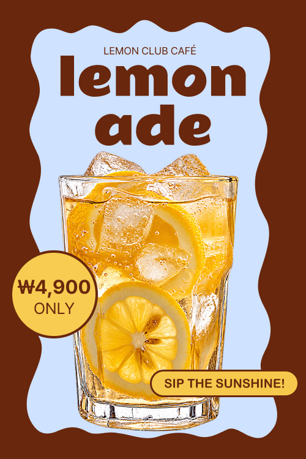
브라운과 스카이 블루 배경에 레몬에이드를 크게 배치하고, 옐로 포인트로 가격과 메시지를 강조해 상큼하고 시원한 분위기를 표현했습니다.
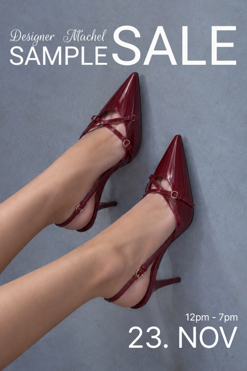
차분한 블루 그레이 배경과 버건디 힐의 대비를 살리고, 간결한 타이포그래피로 샘플 세일 일정과 시간을 전달했습니다.
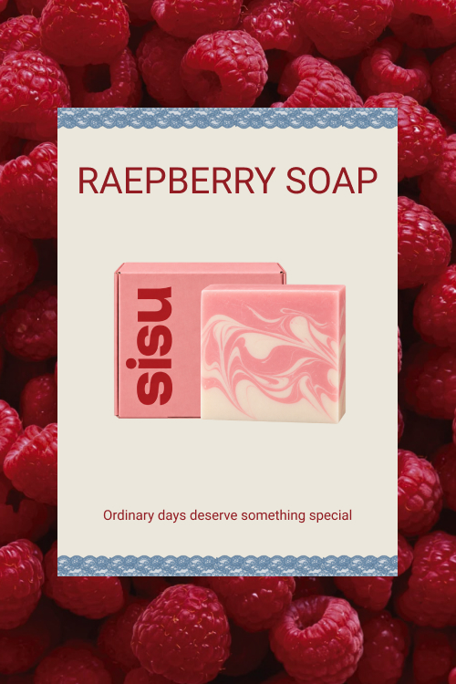
라즈베리의 풍부한 색감과 핑크 패키지, 블루 레이스 장식을 조합해 일상 속 특별한 비누의 이미지를 표현했습니다.
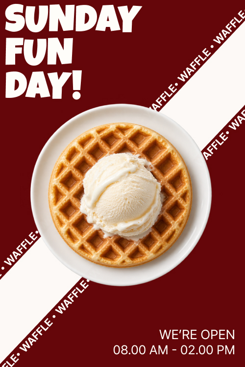
버건디 배경과 대각선 타이포그래피 사이에 와플과 아이스크림을 크게 배치해 경쾌한 분위기와 먹음직스러운 인상을 강조했습니다.

손으로 그린 강아지 일러스트와 네이비 타이포그래피를 조합하고, 행사 일정과 장소를 친근하게 전달했습니다.
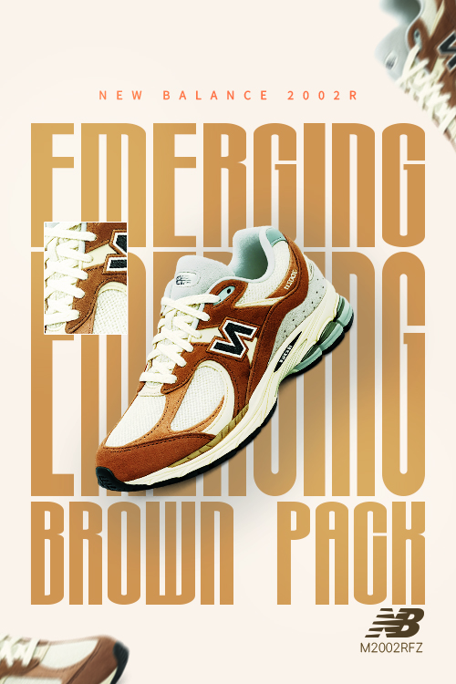
톤온톤 브라운 팔레트와 대담한 타이포그래피, 디테일 컷으로 소재감과 헤리티지 무드를 전달했습니다.
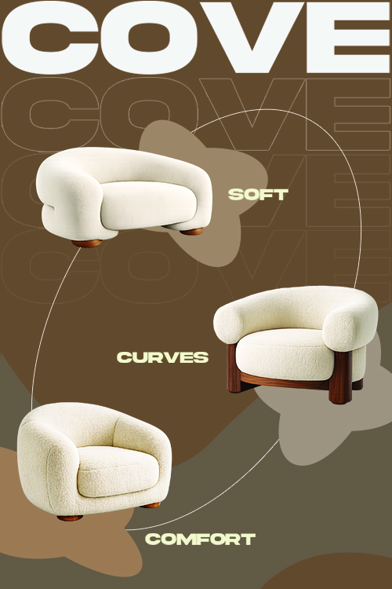
곡선형 체어와 브라운·올리브 그래픽을 조합해 부드러운 형태와 편안한 착석감을 시각적으로 표현했습니다.
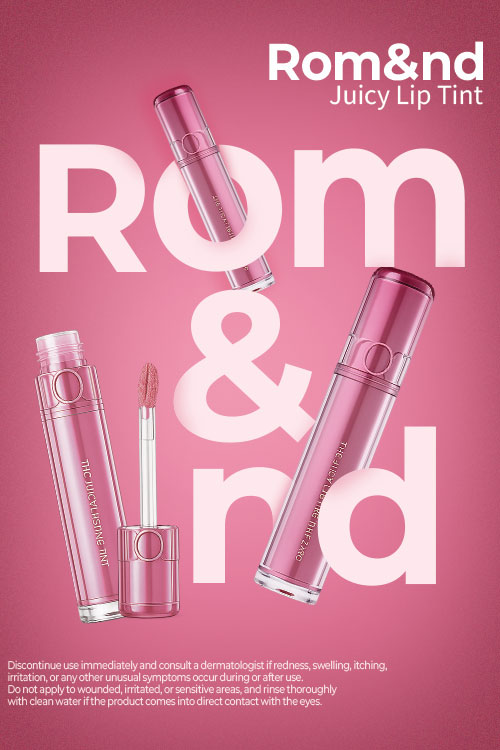
선명한 핑크 톤과 대형 타이포그래피 사이에 제품을 리드미컬하게 배치해 컬러와 패키지를 각인시켰습니다.
Detail page
제품을 처음 보는 순간부터 특징을 이해하고 다음 행동으로 이어지도록 화면의 흐름을 구성했습니다.

Mobbly Kids Lotion
어린이 피부를 위한 순한 보습 성분과 포근한 사용감을 따뜻하고 친근한 이미지로 전달한 키즈 로션 상세페이지 디자인입니다.
상세 작업 보기 ↗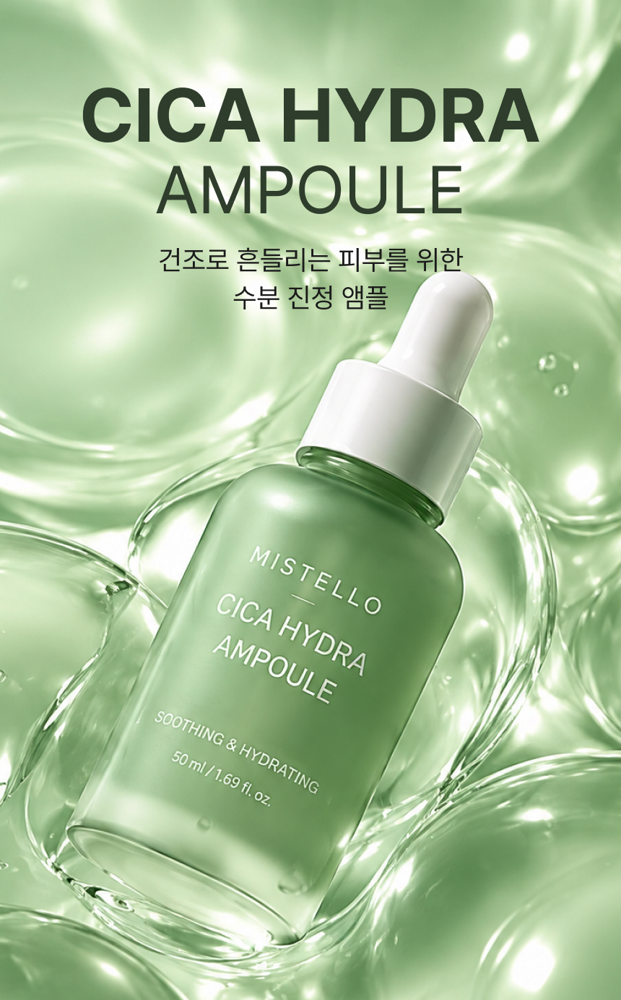
Cica Hydra Ampoule
촉촉하고 맑은 수분감을 중심으로 제품의 진정 성분과 깨끗한 이미지를 시각적으로 전달한 앰플 상세페이지 디자인입니다.
상세 작업 보기 ↗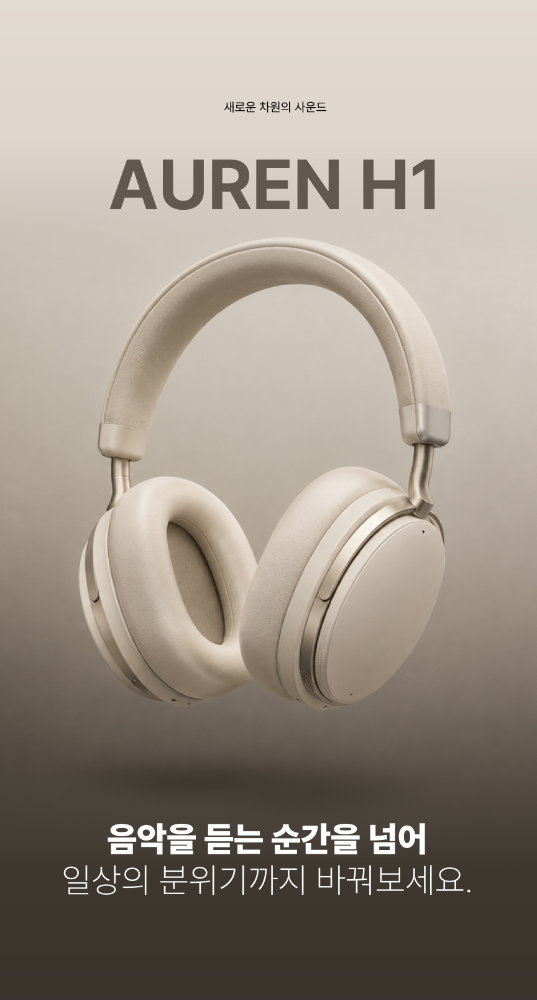
Headphones
제품의 기능과 감성적인 인상을 하나의 긴 흐름으로 연결한 상세페이지 디자인입니다.
상세 작업 보기 ↗